走進原畫
五原這座城的地圖做了兩套。第一套是一件一件拼出來的（建城工法），拼好跟舊地圖放在一起看，我說：「我們獨立製作的時候，風格整個走偏了。」第二套整張畫直接當地圖，「走進原畫的原因是，原畫的風格很喜歡。」我還要更多：「我看舊原畫的細節很滿，很多小東西，看起來就很有生活感，我也想要那種 3A 大作藝術品的感覺。」
這一章記下 2026-10-21 那一天（從下午兩點多的提交到晚上十點半）：把一整張畫變成能走的地圖，試過七版畫法，最後留下哪一套，踩了哪些坑，還有照著就能重做一遍的指令。想用 AI 畫 RPG 地圖的人可以直接看最後兩節。
一整張畫的好處是光和畫風整張一致。難的是人要能走到屋子、樹、院牆後面被擋住。這一章大部分在講後面那件事。
拼出來的城哪裡不對
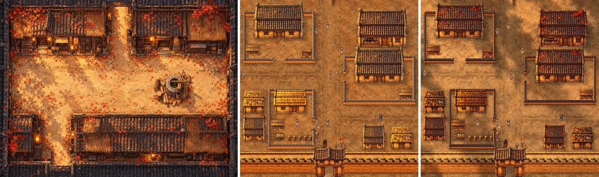
左邊是舊原畫，《續》改地圖以前那張五原的街。照到太陽的地方很亮、偏金黃，陰影很深；屋前擠滿油燈、柴堆、竹簍、木桶；整張是一起畫的，光從哪裡來、哪裡亮著燈都一致。中間是第一套拼出來的 B2（南北大街那一塊），地面整片中間調，院子空地大、擺設少。右邊是在拼出來的版本上疊光影的試做，變沉、變暖了，還是差一截。
我說我不知道為什麼會走偏。AI 回頭查了產圖的參考圖和提示詞，找到四個原因：
- 物件產圖的參考圖用的是 E3 那張（為了每件角度一致挑的），不是舊原畫。
- 提示詞要求邊緣乾淨、地上不要影子，物件就像貼紙。
- 每件在綠底上各畫各的，光也各打各的。
- 地面是無縫材質照格子拼的，整片一樣。
先照舊原畫重畫一整張
那時候試過兩條路：A 是物件一件一件重畫、地面疊光影；B 是先照舊原畫重畫一整張。我問：「能不能先 B 後 A 啊？先有原畫定錨圖後，盡可以製作成定錨圖樣；然後如果真的沒辦法製作出的部份，也許我們就直接定錨圖上去，只限制走路範圍，這樣做？」所以先拿 B2（南北大街那一塊）畫一整張定錨圖，物件和地面再照它做。
一塊地圖是 64×64 格（一格半公尺），一張圖畫不下那麼多細節，所以 AI 寫的 xu/game/art/wuyuan/anchor.py 把構圖切成 2×2 四片，每片 34×34 格、相鄰兩片重疊 4 格。構圖是現在那一塊的合成圖（不畫人），每片配兩張舊原畫當畫風參考：舊版五原的街 assets/maps/b2.webp 和魏家門口 a4.webp。
四片分三輪畫：先畫左上；右上、左下的構圖貼上左上已經畫好的那條重疊帶，接著畫；最後右下貼兩邊。拼回整張時重疊處漸變接起來。第一次是硬貼，在第 34 欄留了一道線，後來改成先對色調再漸變淡入。
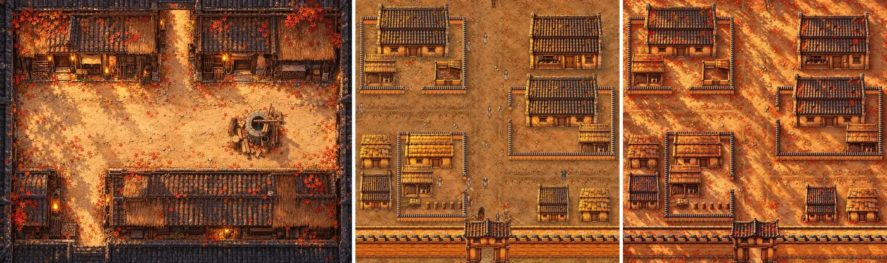
第一版地面的金黃斜陽、深影、滿地紅葉都出來了，屋子卻幾乎照原樣，屋前也沒多擺設。地上斜斜的樹影是照舊原畫畫的，B2 裡其實沒有樹。所以又畫了一版加強版（--v2）：屋子也重畫成舊原畫那種畫法，屋前補柴堆、陶罐、竹簍，再試種四棵楓樹，讓樹影有來處。
整張畫直接當地圖
做到這裡我說：「我想要的是那種可以走進原畫的感覺。」原本的計畫是拿定錨圖當參考再產物件，後來改成整張畫直接當地面。
引擎只知道兩件事：哪些格子不能走，哪些圖要蓋在人上面。整張畫對引擎來說只是一張地面，人走到屋子後面會直接畫在屋頂上。所以每件會擋人的（屋子、院牆、樹、車）都要從畫上剪下來，原位疊回去當遮擋層，引擎照圖的下緣排前後。
外框請 AI 畫，像素用原畫的
外框怎麼剪是我出的主意：「我想知道如果我們給整張原畫不要的地方填綠色，然後送去給重繪的話，有機會能把比較不好去背的物件讓繪圖 AI 直接幫我取出來，背景是綠色嗎？這樣我們就會很好去背了。」「那重點就是物件邊緣需要去背乾淨，這樣人走過才會被漂亮擋的。」做法是把物件以外先塗綠，送給 AI，請它「這件不動，其他全部塗成純綠」，回來再去背。像素一律用原畫的，AI 回來那張只拿來當外框，所以它就算偷改了一點顏色也不會帶進遊戲。
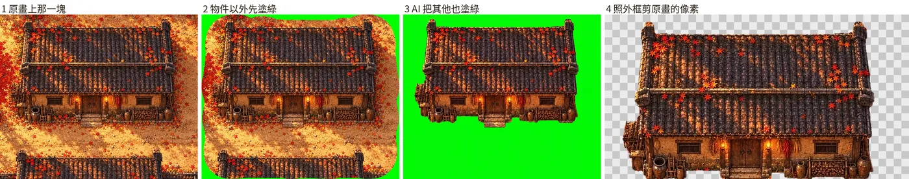
細節：
- 送出去的範圍是物件的圖框外多 3 格（第五版的屋子會偏幾列）；保留不塗綠的是原本那件的外形往外放 96 像素。
- 回來的圖量「綠色減掉紅、藍裡大的那個」，綠的去掉；外框往裡收 1 像素、去掉碎點，再羽化 1 像素。
- 兩件疊在一起的地方，我看了問：「看起來有問題的部份在房子屋頂疊後面院牆的地方，AI 好像猜不出來對不對？」「等於我們應該未來會需要取出房子的部份，後面看不到的院牆就不管他？」AI 會把壓在北牆上的那截屋頂當成牆留下來，後面看不到的牆本來就不用剪，所以重疊的像素一律歸前面那件（佔地下緣比較南的那件）。
Image 1 is a piece of a finished top-down game map painting. Everything except {what} has already been painted pure green.
Keep {what} exactly as it is in image 1: the same pixels, position, size, outline and colours; do not repaint, restyle, move, resize or complete it.
Paint everything that is not part of {what} as a completely flat opaque #00FF00 pure green: the remaining ground, the shadows and fallen leaves
lying on the ground, and every other building, wall, tree or object. No new details, no outline, no glow, no text, no watermark.
{what} 照種類換：房子是「the building in the middle (its whole roof, walls, door, windows, and whatever stands against its walls or hangs under its eaves)」，其他像門檻、劈柴木樁、火把一律說成「the object in the middle」。
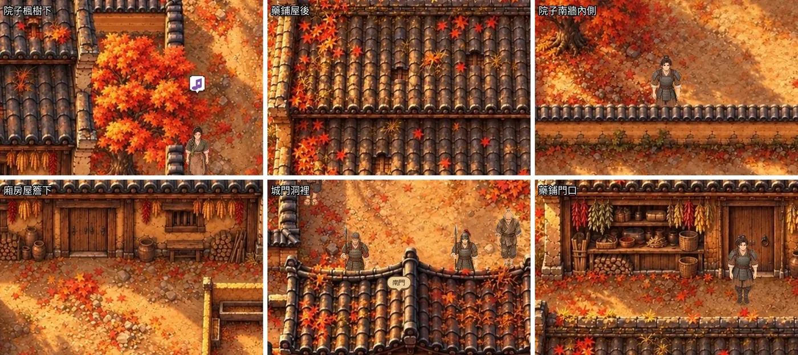
用加強版那張在引擎裡把主角放到最容易穿幫的六個地方截圖：楓樹下、藥鋪屋後、廂房屋後、城門洞裡，人整個被蓋住，邊緣沒有一圈地面色；院子南牆內側，膝蓋以下被牆擋住；藥鋪門口，人站在前面。做法可行，接下來是畫風。
畫風試了七版
| 版 | 怎麼畫 | 結果 |
|---|---|---|
| 第一版 | 現在的合成圖當構圖，分四片 | 地面光影對了，屋子幾乎照原樣 |
| 加強版 | 同上，屋子也重畫、補擺設、種四棵楓樹 | 拿來驗證走進原畫的做法 |
| 第三版 | 照現在的構圖畫 | 屋子大小、門的位置跟配置一樣，門比人高，生活感很滿；瓦片大塊（構圖裡的屋子圖就是大塊瓦，模型照著畫） |
| 第四版 | 舊原畫當初的做法：構圖只給平塗色塊 | 瓦片細、一層暖霧，最像舊原畫；但它照舊原畫的相機把屋子壓扁（配置從屋脊到門口 13 列，它只畫 8 列），門大約一公尺高、比人矮，還自己加了一棵楓樹 |
| 第五版 | 平塗色塊加屋脊線，提示詞講明屋子要填滿色塊、門比人高、配置裡沒有的樹不准加 | 屋子比第四版高，門跟人一樣高，瓦片粗細介於三、四版之間，暖霧、油燈、擺設都有；左上角還是自己加了一棵楓樹 |
| 第六版 | 第五版分九片 | 細節多很多，接縫切過房子會出事 |
| 第七版 | 第三版分九片 | 一片自己加的草頂房子橫過南北大街 |
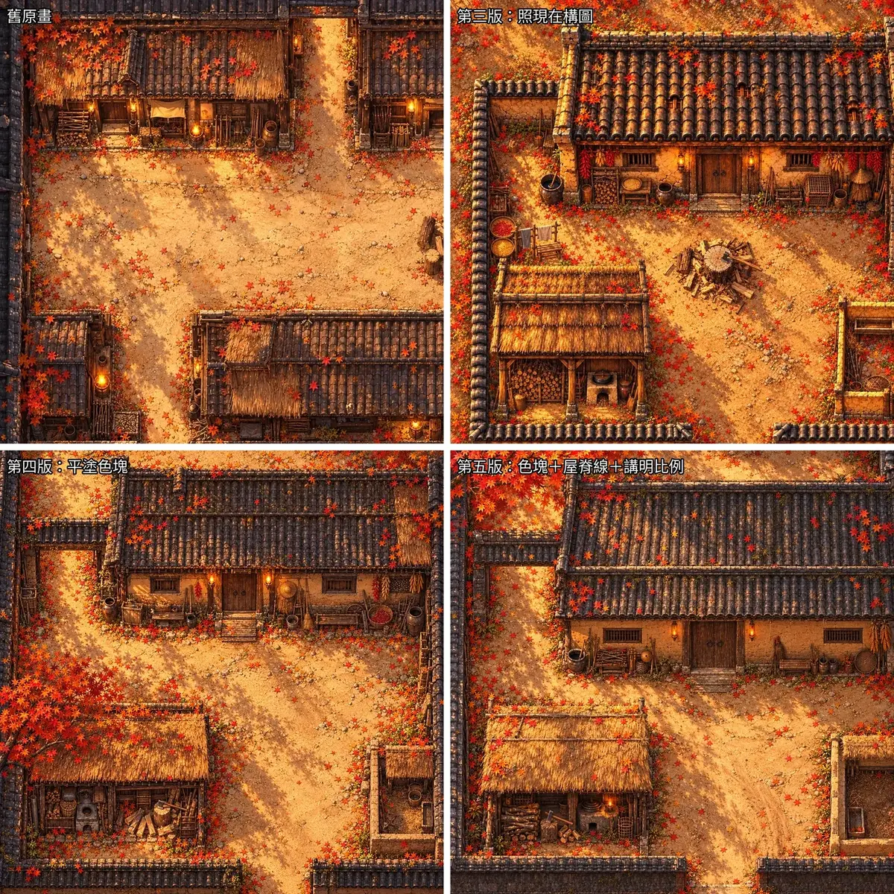
都拿 B2 西北大戶那一角試，放成跟舊原畫一樣一格 48 像素比。我回：「OK，優先 5，不行才退 3。」
第五版的提示詞（色塊圖例那一段會照每一片換，見下一節）：
Image 1 and image 2 are the old maps of this game: this is exactly the painting style to use. Image 3 is a flat colour-block LAYOUT DIAGRAM
of one square piece cut out of a bigger map of the same town, seen like the game camera; it is the exact composition you must follow. Its colours mean: {圖例}.
Paint image 3 as a top-down 2D RPG map in exactly the painting style of image 1 and image 2, with the quality of a AAA game's hand-painted concept art:
Japanese anime film background art, thick soft painterly brushwork, rich micro-detail everywhere, every surface weathered (moss, cracks, stains, worn wood),
warm golden late-afternoon autumn light from the top left with a soft warm haze, layered light with warm bounce light, soft dark contact shadows where things
meet the ground, big bright patches of sunlight and deep warm shade; small grey clay roof tiles in many thin rows as in image 1 (each tile about 20 cm), soft thick thatch.
The houses and yards are full of everyday life of the Eastern Han dynasty, as dense as image 1: stacked firewood with an axe in a chopping block and split logs,
big pottery water vats with a gourd ladle, pottery jars, bamboo baskets, round bamboo trays drying grain and red chilies, strings of red peppers and corn hanging
under the eaves, straw raincoats and conical hats hanging on the walls, hoes, rakes and sickles leaning against the walls, a wooden wheelbarrow, sacks of grain,
a stone mortar and pestle, a bamboo chicken coop, a wooden bench and stools, a bamboo broom, coils of rope, clothes drying on a bamboo pole, weeds and moss along
the bottoms of the walls, wheel ruts and footprints in the packed earth, red and orange maple leaves gathered under the trees, along the roof edges and in the corners.
These small things stand against the walls of the houses and courtyards; the streets, the middle of every yard and the paths to every door and gateway stay open.
Every building, wall and tree fills its whole block in image 3, from the top edge of the block to the bottom edge, with the same size and outline.
Do not add any building, shed, wall, gate, well or tree that has no block in image 3. The ground is seen from straight above, buildings from high above
and from the south as image 3 shows them. Beside some doors stand small bronze oil lamps of the Han dynasty on wall brackets, unlit: no flame and no glow anywhere
(fires are added later as separate animated objects); never glass lanterns or paper lanterns; stoves are unlit.
The picture is cut from a bigger map: fill the frame edge to edge, and anything cut by the edges stays cut straight at the edge.
No people, no animals, no text, no letters, no numbers, no grid lines, no watermark.
提示詞裡的辣椒、玉米
上面那段有一句「round bamboo trays drying grain and red chilies, strings of red peppers and corn hanging under the eaves」。這是 AI 在 2026-10-21 寫第五版提示詞時加的（提交 fbd5679c），沒對年代。辣椒、玉米是明代以後才從美洲傳進中國的，《續》在東漢。產圖模型照字面畫，五原的原畫裡也畫出來了：AI 逐塊放大找，確定 98 處（修好那幾年的 13 塊裡 80 處，其他時期的 A1、A2 等 18 處），另有 30 處是金黃的穗子，分不出是麥、粟還是小玉米棒。簷下的民房門邊多半掛著一兩串，市集的攤子上還有整箱辣椒。
2026-10-22，AI 把產線改成能換地方跑，逐句看提示詞的時候才查到。我當時說：「辣椒、玉米 漢代沒有 需要記入公開站 我會笑死...AI未查資料的毛病 對嗎」。我的決定是：「真的有畫出的地方先記錄一下 未來如果有空的時候 再去處理吧」。
AI 把新地方的提示詞改成曬小米、豆子，簷下掛蒜頭、乾菜（提交 62173ccf）。五原畫好的不重畫。
之後另一台電腦上的 Claude Sonnet 逐句查了所有提示詞，每條附出處，列出確定 7 條、懷疑 12 條。除了辣椒、玉米，衣服還寫了棉布，棉到宋元才在北方普及，改成麻；胡騎的彎刀到 7 世紀才有，改成環首直刀；茶棚也有問題：漢代喝茶只在四川一帶（西漢王褒〈僮約〉寫到在四川買茶、煮茶），我選了把劇本的茶改成漢代的「漿」，《史記》裡就有「賣漿」這門小生意。改劇本要過審稿閘門，兩位 AI 評審四票都說「茶棚」比較好懂、「漿」會讓人停下來猜，換了三種寫法都沒過；我還是留「漿」。
呂布的方天畫戟是後世的說法，但它是《香布纏》的正典設定，留著。其他幾條我要 AI 照辣椒那樣處理：之後產圖用的提示詞改掉，畫好的記成待辦。
圖例只寫那一片有的顏色
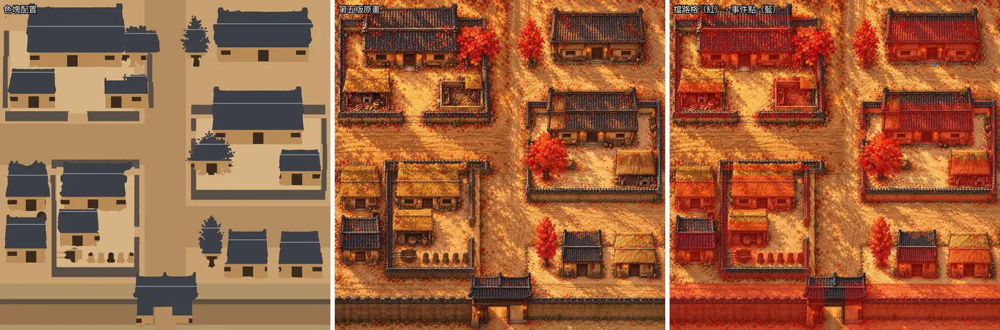
第五版第一次整塊畫，左上那片把西街畫成一道城牆加一座城門樓。原因是圖例寫了「最下面那條寬的土色帶是城牆」，那片最下面剛好是西街。改成每一片的圖例只寫那一片裡有的顏色，街道寫明「保持全空，上面什麼都不准蓋」，重畫後西街、南北大街、往市的街都是空的路。
同一天還抓到一個送圖順序的錯：提示詞寫第 1、2 張是舊原畫、第 3 張是配置，整塊畫的時候程式卻把配置送成第 1 張（試畫那次順序是對的）。AI 自己對出來改掉，第五版重畫一次。
分九片：細節多了，接縫壞了
四片的版本一片畫 34 格，一格只剩 32 像素。我看了問：「生成的時候你不是說會有很多細節？你現在是有很多細節嗎？我怎麼沒看到。」又說：「我要有細節的版本。」於是試了第六版：第五版的畫法一塊分九片，一片 24 格、一格約 52 像素，接起來不縮小。
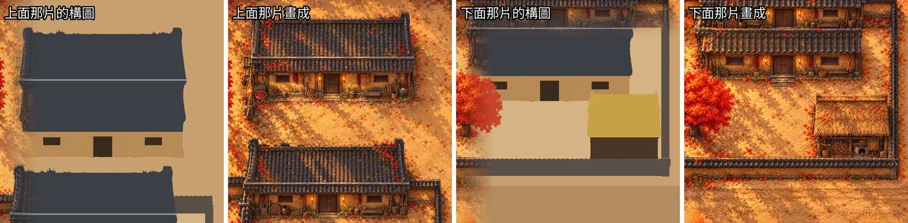
細節真的多很多，但九片的接縫一定會切過房子，出了三處問題。AI 查到的原因：上面那片只看到正房屋頂上半截的色塊，平平的一塊看起來像一個完整的屋頂，模型就補畫了牆和門；下面那片看到上面畫好的房子，又在剩下的色塊裡畫一整棟。分四片的時候接縫剛好落在大街和空地上，才沒出事。
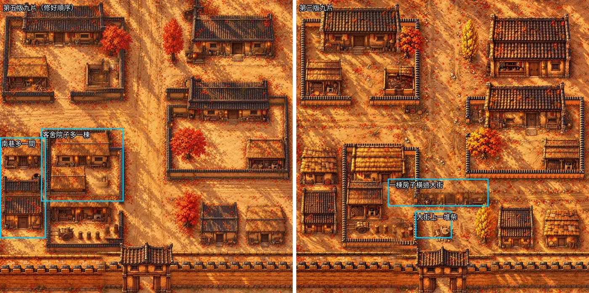
第七版（第三版分九片）位置大致照配置，但右中間那片在最下緣自己加了一棟草頂房子，下面那片接著畫，變成橫過南北大街把路擋住。
想讓整塊畫大一點也不行：產圖工具一張最大 1254 像素，要 2048 也只回 1254。
我看完說：「都不行耶為什麼，還是獨立棟出來做細節呢。」
最後的做法：底圖整塊畫，每棟單獨放大重畫
這就是現在用的做法：
- 底圖還是分四片畫。四片守得住配置，光整張一致。
- 每棟房子、廂房、豬圈、樹，拿底圖上剪好的那件、背景塗綠，單獨放大重畫。一格約 85 像素，原畫只有 32 像素。第二張參考圖給舊原畫，讓它照那個密度補擺設。
- 重畫的對準底圖那件，畫回一張一格 48 像素的高解析整張（3072×3072，跟舊原畫一樣密），遮擋層再從這張剪。
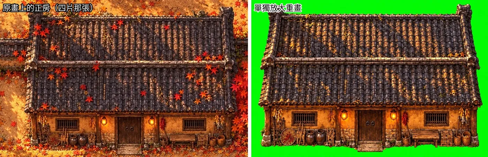
重畫的屋頂、門窗、門邊的燈、簷下的辣椒玉米、陶甕、板凳、竹匾、柴堆都在原位，連屋頂上的樹影都保留。以前獨立產物件會走偏，是因為參考圖用的是 E3；這次參考圖是原畫自己那一塊，光、顏色、角度都跟著原畫走。
Game map object sprite for a top-down 2D RPG, one single {what} only. Image 1 shows that {what}, cut out of the finished painting of this map,
on a flat green background. Image 2 is an old map of the same game, for how dense and lived-in the details are.
Draw exactly the {what} of image 1 again, much larger and with far more detail: the same outline and silhouette, proportions and parts, everything
in the same place, the same colours, painting style and warm late-afternoon light from the top left, the same fallen red maple leaves lying on it.
Give it the rich hand-painted micro-detail of a AAA game's concept art: weathered wood, cracked rammed earth, moss, every tile and straw,
and the small everyday things standing against it or hanging from it exactly as in image 1, as dense as image 2.
Any lamp is a small bronze Han dynasty oil lamp on a wall bracket, unlit (no flame, no glow), never a glass lantern.
Only this {what} and the things standing against it: no ground around it, no cast shadow on the ground, no people, no animals. Clean edges.
Background: a completely flat opaque #00FF00 pure green fill everywhere else, no gradient, no shadow. No text, no watermark.
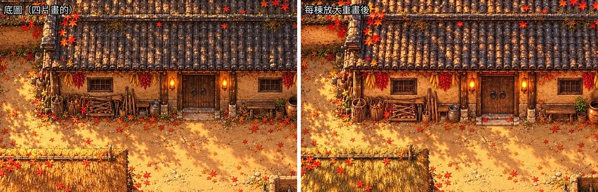
這一步踩過的坑：
- 對位。 一開始用外接矩形對，AI 外框把正房左邊連著的一段院牆也算進去，房子被拉寬 3 格。改成外形重疊對位：在一組縮放和位移裡找跟底圖那件外形重疊最多的位置。
- 參考圖一開始給整個範圍，客舍正房和緊貼的廂房都在裡面，AI 不確定畫哪一棟，疊成兩層屋頂。改成只放剪好的那一件。
- 外形重疊不夠的就不用：房子低於 0.8、樹低於 0.65，留底圖那件。疊上去會變兩層。
- 我驗收時看到房子前面的陶罐、竹籃被切一半，切線下面是底圖、位置不一樣。原因是重畫的那張照佔地最下一列切，下面露出底圖。改成重畫的先畫進高解析整張，遮擋層從同一張剪，切線兩邊就是同一張畫。
- 重畫時屋頂上的紅楓葉不見了，提示詞加一句照畫落葉。
- B2 第一版畫出一盞玻璃吊燈。我定過燈只有油燈和火把，沒有燈籠，也沒有玻璃；牆上也不畫火，火另外做成會動的物件。提示詞改成門邊放不點火的漢代小銅油燈。
樹要照葉子的形狀切
我看試走截圖時問：「在樹下為什麼沒被樹枝或樹葉擋？」一棵樹整片照樹幹的下緣排，人站在樹下比樹幹南邊一點就跑到樹前面去了。改成每棵樹切兩片：樹冠永遠蓋在樹下的人上面，樹幹照原本排，人站在樹幹前面時腳擋在樹幹前。
第一次樹冠和樹幹是用一條水平線切開的，垂下來的葉子被切成一條直線。我問：「樹緣是沒切好嗎？」「怎麼會切成直線？」「要照葉子形狀切啊，那不就是重點嗎。」樹冠的外框也改成請 AI 畫：整棵樹以外塗綠，請它只留樹冠枝葉。
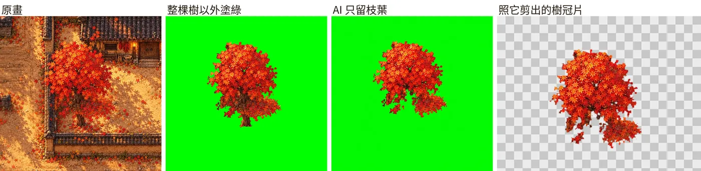
Image 1 shows one tree from a top-down game map painting; everything else is already pure green. Keep only the tree's crown exactly as it is in image 1:
all the leaves and the branches among the leaves, the same pixels, position, size and outline; do not repaint or complete it.
Paint the trunk below the crown, the roots and everything else as a completely flat opaque #00FF00 pure green. No new details, no outline, no glow, no text, no watermark.
第五版的樹冠畫得比配置大很多，B2 院子的楓樹伸出院牆 3 格多。剪的範圍只留 3 格時，樹冠在第 31 欄被切成直線；樹的範圍放大到 6 格才完整。
院牆
我又問：「院牆後為什麼角色擋住了一點瓦片？」畫上的院牆比配置高，照配置的高度剪，瓦頂最上面一條沒剪進去。橫的牆改成往上多留 1.5 格，直的往兩邊各多留半格，外框照 AI 畫的。
第五版的院牆也會畫歪幾格。每一段牆照 AI 外框找重疊最多的位置（上下或左右各 4 格內、每步 1/4 格），整段搬過去，擋路格跟著搬。
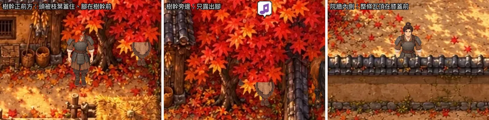
擋路跟著畫走
第五版照色塊自由畫，位置跟配置差幾格：藥鋪往上 5 列、東邊大戶正房往上 3 列、西北大戶院子北牆往上 2 列、東牆往右 2 到 3 欄，其他 0 到 1 格。擋路改成跟著畫走：
- 每件從剪好的外框量出畫上的下緣，佔地從那裡往上算配置的深度，左右照外框底部的中心。
- 門口的事件跟著搬到畫上的門前；站進擋路格的路人挪到最近的空格。
- 隔壁那一塊產生走過邊界的跳轉時也看畫上的擋路。B3 原本會把人從邊界直接跳進東邊大戶的院子。
我還看到模型自己加的房子和牆。找法是每一片再請 AI「地上站著的全部留著，只有地面塗綠」，扣掉已知物件的遮擋層，剩下一團一團的就是多出來的，蓋到四成以上的格子標成不能走。
Image 1 is a piece of a finished top-down game map painting. Keep every building, wall, gate, tower, tree, cart, fence, post, stall, well, jar, basket,
firewood pile and every other object standing on the ground exactly as it is in image 1: the same pixels, position and outline. Paint only the bare ground
as a completely flat opaque #00FF00 pure green: the packed earth, the streets, the fallen leaves lying flat, the shadows on the ground.
No new details, no outline, no text, no watermark.
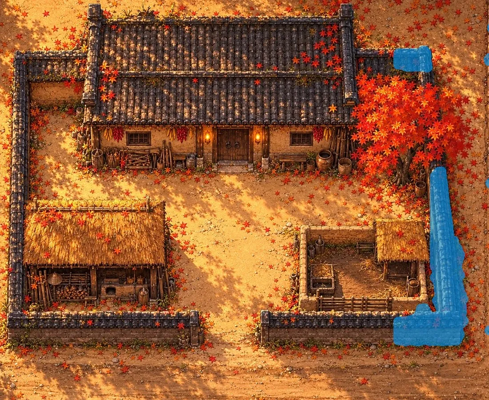
- 細的不算：大街東側一條木頭路邊被當成牆，大街只剩 3 格過得去。改成先削掉不到 0.7 格厚的，人跨得過；不到 0.3 格大的碎塊也不算。
- 城牆那一條不碰。城頭走道、登城道、門洞要能走。
- 路過的人（從街的一頭走到另一頭的路人）直線路線撞到畫上的物件，就整條平移到最近一條全空、沒人走的平行線。B1 西街西頭模型多畫了一圃花，挑擔的貨郎會卡住；B2 馬車改道後本來跟牛車同一欄、方向相反，會對撞。
城牆照我排的
我說：「如果你用 5 真的不行就用 3，因為還有另一件事很重要，就是城牆。」又問：「城牆到時候如果用 5 畫出來，有機會會造成整座城的城牆都不一樣形式，對吧？」所以城牆、城門樓、角樓、馬道、旗杆照我在城邊積木排好的那套，直接貼進構圖，提示詞講明只能重新上色，形狀不准改：
The thick rammed-earth city wall in image 3, with its gate towers, corner towers, horse ramps and steps, is already drawn in full detail as the game's city wall:
keep its exact shape, position, size, battlements, towers, ramps and steps, and only repaint it in the painting style of image 1 and image 2.
- 城牆那一層畫在物件下面。A1 的老槐樹樹冠伸到城牆上，原本整張貼進來，變成上黃下紅兩截樹。
- 城門樓、角樓不重畫，每塊都跟我排的一樣。
- 北門、南門的門洞被 AI 外框當成城樓的一部分，人走進門洞整個不見。改成外框不准超出我那張城樓圖的外形，我修圖時門洞是透空的，人走過門洞就看得到。
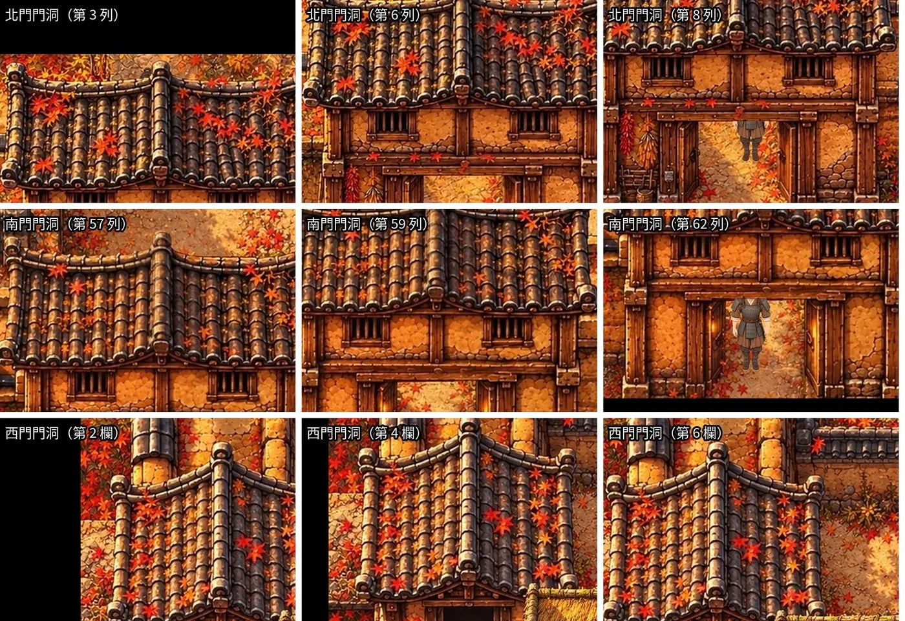
熱鬧的用色塊，整齊的貼原圖
色塊只給一般民房、廂房、豬圈、樹，讓模型照舊原畫自由畫、補生活感。井、晾衣竿、雞籠、柴堆、攤子、營帳這些貼原本的圖，形狀和位置照原樣；一開始它們也用色塊，結果被當成房子畫。
郡府、糧倉、市集和城北的軍營排得整整齊齊。我問整齊的地方用第三版、熱鬧的用第五版好不好。AI 建議整座城都用第五版、整齊的建築貼原圖，畫風才接得起來；我選了這個。郡府正堂、市牆、營柵、營帳的形狀和位置照原樣，只重新上色。
拴著的馬和射箭的兵不畫進原畫，照原本的圖疊在上面；馬和人畫進去就跟地面黏成一張了。
我看到 A2 路邊有三個水缸，問：「漢代有備這些防火水缸嗎？」配置裡寫的是「北街南邊防火的大水缸」。AI 查到的是《墨子·備城門》：城上「五十步一罌，盛水」，守城時防火攻用的；路邊、門口擺大缸防火（太平缸）查到的是明清紫禁城的做法。三個缸拿掉，原本的位置請 AI 補回地面。
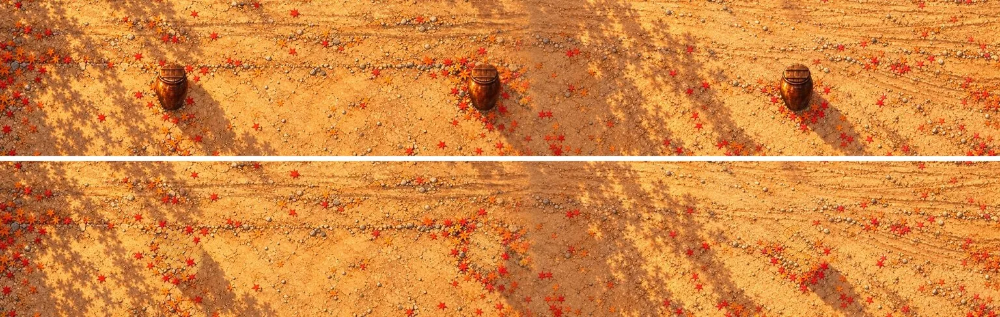
整齊的四塊，牆在接縫錯開
整齊的四塊（A3 郡府與倉、B3 市、C2 校場、C3 城北山腳）照西邊四塊的做法分四片畫，拼起來牆在接縫錯開：A3 的北牆在接縫折一下，B3 市牆西邊那道上半段在第 1.6 欄、下半段在第 5 欄。AI 查到的原因是第一片沒有鄰片可以對照，牆整條挪了一到三格，後面的片照著偏掉的接邊畫。西邊四塊的片其實也偏了 1 到 1.7 格，只是偏的方向順著跨接縫的牆，看不出來。
這一段前後試了五種做法。
先畫有角樓的那片
四片原本照左上、右上和左下、右下的順序畫。改成先畫有角樓的那片，讓後面的片照著城牆接，結果接縫看得出一條直線，楓樹被切成半棵。
城內先畫成一張縮圖
我問：「有沒有可能 整塊五原城內做成一塊縮圖?五原城在大地圖的小圖 就這樣做好了?!!」城內六塊先照配置畫成一張 1536×1024 的縮圖，一張圖就沒有接縫，城牆、光線、顏色一次定好；每一塊再照縮圖上那一塊放大重畫。
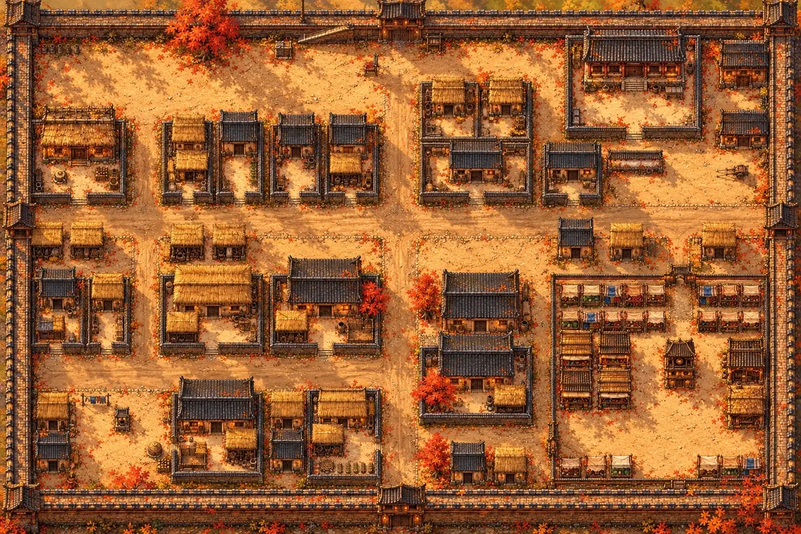
畫回原尺寸，我看了說：「有點Q版了 不是原來的高細節了」。縮圖一格只有約 8 像素，模型照著模糊的小圖補細節，葉子、瓦片、水缸都畫得偏大。一張圖畫的範圍越大、一格分到的像素越少，細節就越粗：原本一片畫 34 格最細，整塊 64 格畫成一張（一格約 16 像素）粗一點，城內縮圖最粗。
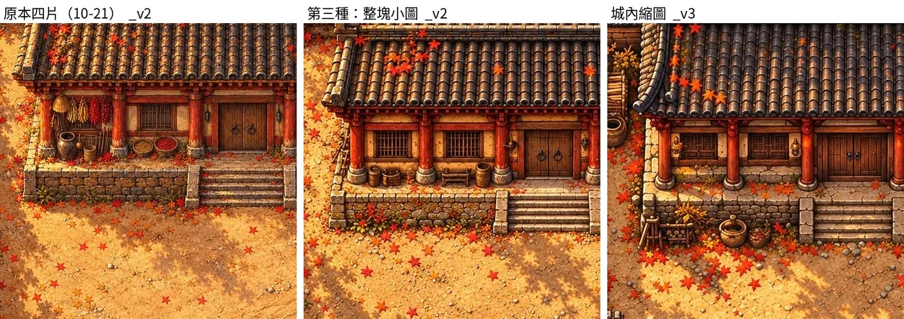
縮圖留給大地圖上五原的小圖用，這是我的意思：「不過你製作的小縮圖可能還是有用，在大地圖上用吧?」西邊四塊退回原本那一版。
接縫切開、重疊漸變
錯位的四塊先試著不重畫，用原本四片拼：
- 每片自動量出偏多少、拉回配置，接縫在重疊的 4 格裡找兩片畫得最像的地方切開。北牆接上了，但兩片把院牆畫成不同材質的地方，切口看得出來。我看了說：「我看到有切到牆的好像都不行」。
- 改用西邊四塊那種拼法，重疊的 4 格兩片慢慢換過去。城牆垛口疊出半透明的雙影，院牆一半淡一半實，營柵一邊圓頭、一邊尖頭。我說：「你還是縫得更醜了」「還不如之前的縮圖後重生了」。
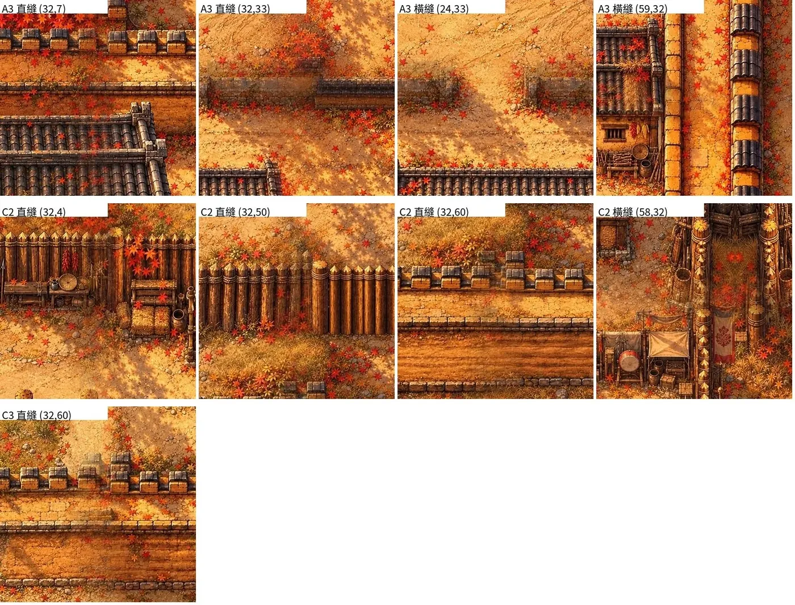
AI 的解釋：對齊只能把整片拉回去，兩片已經畫成不同樣子的牆，拉不成一樣。
每塊自己先畫一張小圖
我選了第三種：每一塊先照它自己的配置畫成一張小圖（一格約 16 像素，一張就沒有接縫），再分四片照小圖放大補細節，每片先對齊小圖那一塊再拼回，整張最後照配置拉回一次。細節比原本四片粗一點，牆都接得起來。A3、B3、C2、C3 用這種，西邊四塊維持原本四片。
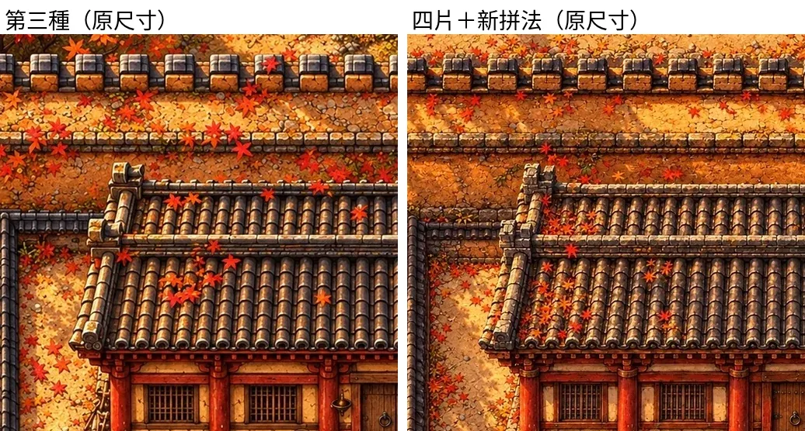
重畫以後 C2 校場西邊的營柵前多了一排兵器架。我要的三個兵繞著校場跑步，原本的路線西邊貼著第 4 欄，會在 (4,43) 卡住；西邊那段往裡挪 2 格、南邊往上 1 格，還是逆時針繞。
一塊怎麼做
城的西半邊四塊拼起來是這樣（遊戲裡一塊一張圖，接邊不會並排出現）：
照著做的指令（在 xu/game/ 底下跑，K 換成塊的代號）：
CITY_GROUND=tex python3 src/city.py # 一般模式建城：構圖、外框都照原本的物件
python3 art/wuyuan/whole_first.py K # 底圖：整塊先畫一張小圖，四片照它放大，拼成 anchor/K_anchor5.webp（西邊四塊用的是 anchor.py run K --v5 四片三輪）
python3 art/wuyuan/anchor.py seg K --v5 # 每件請 AI 畫外框
python3 art/wuyuan/anchor.py crown K --v5 # 樹冠的外框
python3 art/wuyuan/anchor.py segcut K --v5 # 剪遮擋層、量畫上的佔地、院牆搬到畫上的位置 → obj_anchor/K/anchor5/occ.json
python3 art/wuyuan/anchor.py extras K --v5 # 找畫上多出來的
python3 art/wuyuan/anchor.py extrasapply K --v5
python3 art/wuyuan/anchor.py detail K --v5 # 每件放大重畫
python3 art/wuyuan/anchor.py detailapply K --v5 # 畫回高解析整張，遮擋層從同一張剪
CITY_GROUND=tex CITY_PAINT=anchor5 python3 src/city.py # 原畫模式建城
- 一塊大約 45 到 50 張產圖，大約 30 分鐘。兩塊可以同時跑；
art/wuyuan/paint_pipe.py <塊…>會照順序跑完一塊，沒回來的圖再補送一次。 - 從
run到detailapply中間不要重建城：構圖、外框都讀一般模式建出來的那份。 - 給我看之前，AI 先自己檢查：每塊在引擎裡放主角到 10 到 12 個最容易穿幫的地方截圖（屋後、門口、樹下、門洞）；十三塊從遊戲起點走一遍，每個劇情點、出口都走得到；路過的人路線不撞到物件；跳轉不會把人放進擋路格。工具是
tests/paint_check_block.py、tests/paint_check_world.py、tests/paint_occ_shots.py。
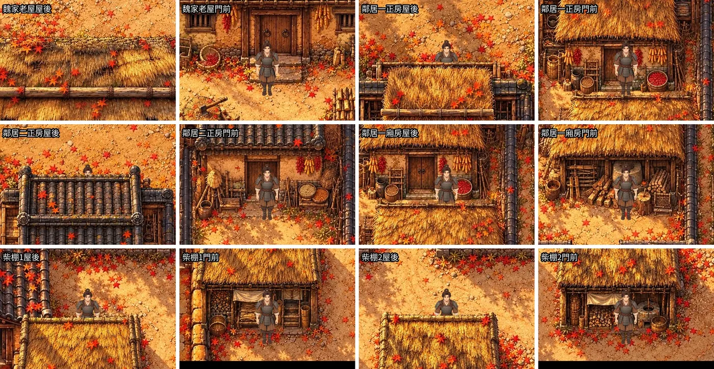
做到哪
城的西半邊 A1、A2、B1、B2 做完，我看了說：「好像可以耶。」「我覺得好像畫得還不錯。」2026-10-22 十三塊都畫好了，在引擎裡試走過：每個劇情點、出口都走得到，路人不站在擋路格上。
還沒做的：
- 門邊的油燈點火，要做成會動的火，另外疊上去。
- 高解析地面一塊約 4 MB，遮擋層加起來也約 4 MB，十三塊約 100 MB，推上 Larch 前要確認放得上去，必要時壓到一格 40 像素。
- 守南門的兵站在城樓後面那一列，城樓畫得高，看起來像站在屋頂上。
- A1 的老槐樹畫成紅楓。色塊圖例只有楓樹，要黃葉的槐樹得補一個顏色重畫那一片。